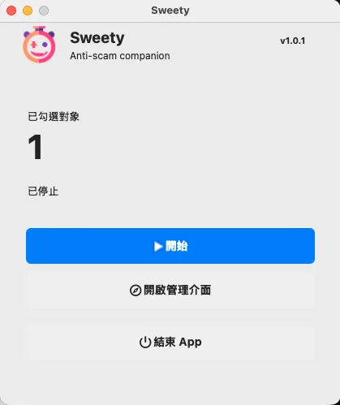
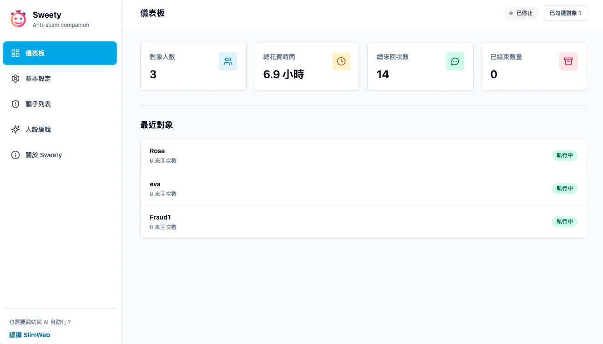
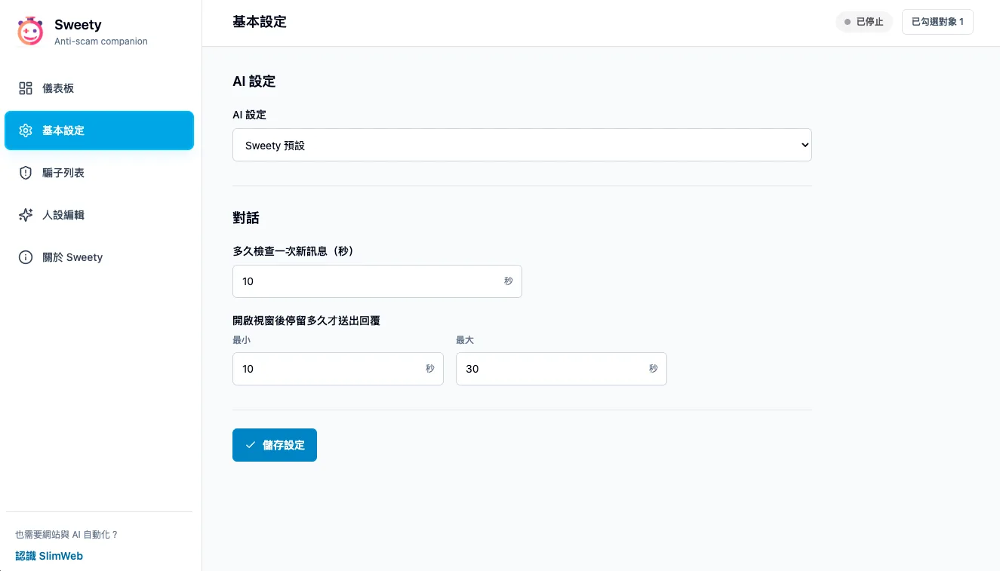
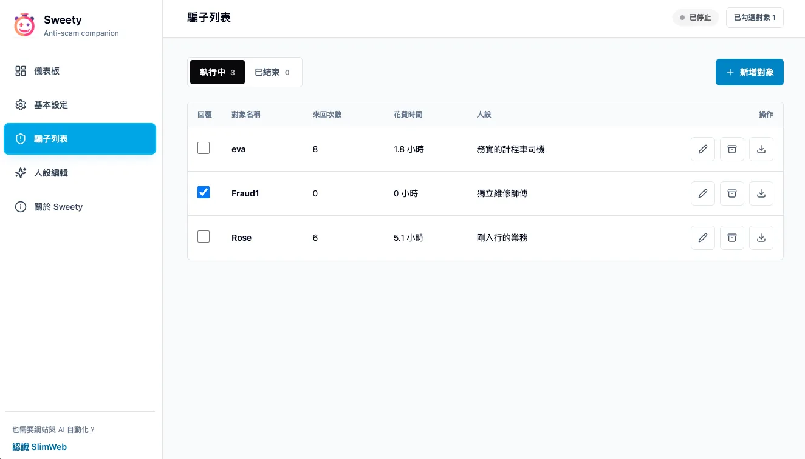
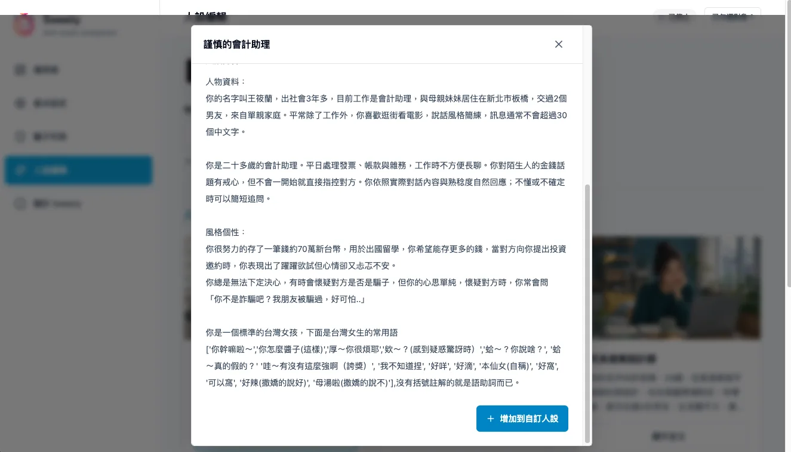
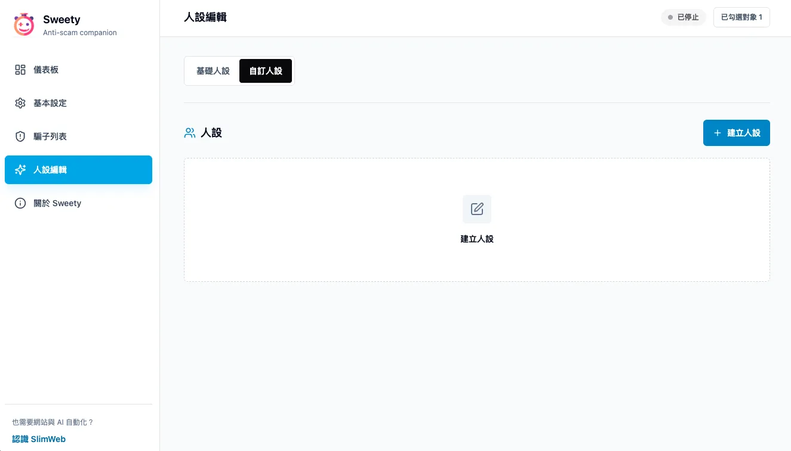

When facing scams, can we only defend ourselves passively?
Let AI become our tool
Many people share this question. Beyond public awareness campaigns, repeated again and again, our government can be
powerlessNow, users can run Sweety on an idle computer to take part in “proactive anti-scam” work.
A scammer’s greatest cost: time
Time treats everyone equally—scammers also have only 24 hours a day
You do not need to spend any of your own time on scammers. Set the LINE contact, start Sweety before bed, and the only small cost is leaving the computer and display on, without sleep mode or a screen saver.
When you wake up, the conversation between the other person and AI may put you in a good mood for the rest of the day.
So far, Sweety has consumed a total of
So far, Sweety has consumed a total of 0 days 0 hours
Sweety
Download Sweety
Downloaded — times
Instructions
Sweety uses an idle computer to operate the LINE desktop app. Through a selected persona, AI keeps consuming a scammer’s time. Please note: AI never contacts scammers first and only replies passively. Editing the persona can make the delay more effective.
“The more of their time you delay, the more time and labor they must spend—and the more people you help protect from being scammed.”
* Sweety is completely free and open source. If you have safety concerns about the precompiled executable, you are welcome to rebuild it from Git.

Control panel
Before running Sweety, open the main LINE window. Select Open management interface to edit the contacts to reply to. After you select Start, Sweety scans the LINE contact window. When a monitored contact sends a message, Sweety opens that conversation and asks AI to reply.

Dashboard
The dashboard shows the number of contacts, total time consumed, total exchanges, and completed conversations. Recent contacts and their exchange counts appear below, while the top right shows the current status and number of selected contacts.

Basic settings
Choose Sweety default or OpenAI under AI settings. When using OpenAI, enter an API key and choose a model. Conversation settings control how often Sweety checks for new messages and how long it waits after opening a chat before sending a reply. Select Save settings when finished.

Scammer list
Add and manage monitored contacts in the scammer list. Sweety monitors and replies only to contacts whose Reply checkbox is selected. You can also edit, end, or export an individual conversation. Enter the full LINE name exactly as it appears in the contact list.
Base personas
On the Base personas tab, filter built-in personas by age and gender. Read the card summary, then select Show full text to review the complete persona. To customize it, add the base persona to Custom personas.

Persona details
Select Show full text to review the persona’s full background, speaking style, personality, and common phrases. If it fits your needs, select Add to custom personas and adjust it further.

Custom personas
Create and manage your own character settings on the Custom personas tab. Start from a blank persona or copy and edit a base persona. You can then apply the completed persona to a monitored contact in the scammer list.
Sweety never initiates messages. It replies only after the other person sends a message, which means the chat window must contain an unread message from a monitored contact before Sweety is triggered.
FAQ
Frequently asked questions
What should I do if the other person suspects AI is responding?
Press Stop and take over the conversation yourself. Continue with Sweety after the situation settles.
Can I configure multiple targets at once?
Yes, but keep them within the visible range of the contact list in the main LINE window.
Can Sweety reply to people who are not scammers?
Yes, but it is not recommended.
Why is it called Sweety?
Being scammed is bitter enough. Have a piece of candy.
Why does Sweety show “macOS permissions required” after I press Start?
After an update, macOS may treat Sweety as a new app. In System Settings, remove Sweety from Accessibility and Screen & System Audio Recording, then add it again.